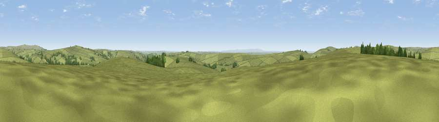

Viewpoint near Hawkridge
#13343 in England · top 23% of its area beats it · near HawkridgeWhere it is
The exact computed spot (SS 84125 32425). Click the marker for map links.
The view, rendered

A 360° render of this exact spot computed from the terrain model, tree cover and land cover — summer colours, afternoon light, calibrated against photographs of famous viewpoints. Real trees, hedges and buildings will differ in detail.
The panorama
Grey silhouette: terrain skyline in each direction (720 bearings, Earth curvature and refraction included). Dashed green: skyline with trees (+15 m) and buildings (+8 m) as obstacles. Blue strip: how far the ground is visible on each bearing.
Where the view opens
Wedge length = distance to the farthest visible ground on that bearing (vegetation-aware). Rings at 10, 25 and 50 km.
What fills the view
94% grassland · 5% woodland ·
Angular shares of the visible panorama (visual magnitude), not map area. Landscape diversity 0.11 (0–1 Shannon).
Key numbers
More beautiful places nearby
The staircase of upgrades: each row has a higher view potential than everything closer. Driving times are estimates from straight-line distance, calibrated against real road routing — check an actual route before setting out.
| Place | Direction | Drive | Score |
|---|---|---|---|
| Brimblecombe Hill | SSW · 3 km | ~7 min | 61.7 |
| Viewpoint near Hawkridge | S · 3 km | ~7 min | 65.1 |
| Winsford Hill | ENE · 4 km | ~9 min | 66.0 |
| Viewpoint near Twitchen | W · 6 km | ~13 min | 69.1 |
| Viewpoint near Exford | NNE · 10 km | ~19 min | 77.1 |
| Viewpoint near Luccombe | NNE · 10 km | ~20 min | 84.5 |
| Viewpoint near Luccombe | NNE · 12 km | ~23 min | 84.6 |
| Viewpoint near Porlock | N · 14 km | ~25 min | 86.3 |
51.07941, -3.65556 · source: screening · position refined by local search. Computed location — check access rights before visiting.